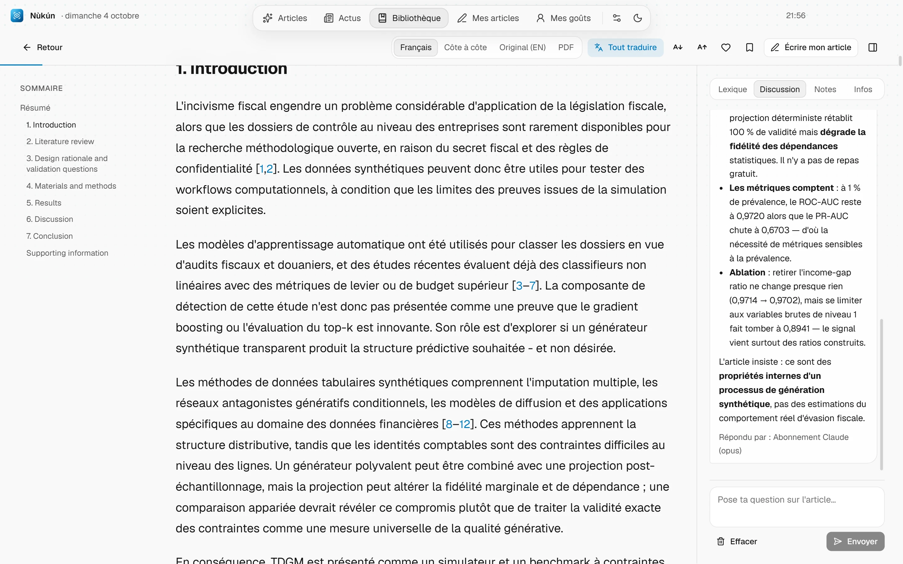

L'article complet, traduit et expliqué
Le texte intégral s'affiche traduit, figures et tableaux compris. Sélectionne un passage pour le faire expliquer simplement, ou pose tes questions à l'IA, qui répond à partir de l'article lui-même.
- Traduction, original ou les deux côte à côte
- Explication des passages et des figures
- Discussion sur l'article et notes de lecture
